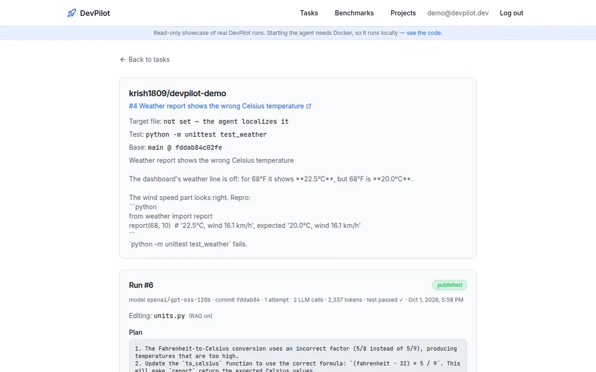

DevPilot
An AI software engineer that turns GitHub issues into tested pull requests, and never ships without a human’s approval.
- A LangGraph pipeline (retrieve → plan → code → test → review → approve) checkpointed to Postgres, so runs survive crashes and restarts.
- Repository tests run in a throwaway Docker sandbox: no network, CPU, memory and PID limits, non-root.
- Each approval is bound to the SHA-256 of the exact diff; if anything changes, publishing refuses.
- Hybrid code search (pgvector + full-text), its own MCP tool server, and evaluation on SWE-bench Lite with the official harness.